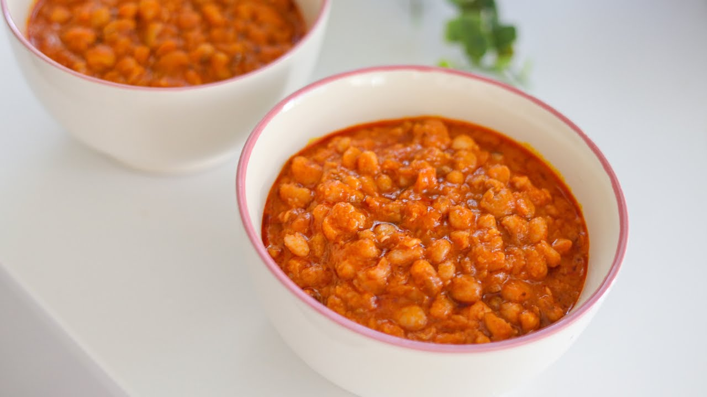

Home
Beans Recipes

Description
Below are the ingredients for a Nigerian Beans meal
- Nigerian honey beans
- Palm oil
- Chopped Onions
- Crayfish
- Scotch bonnet peppers
- Seasoning cubes
- Salt
- Fresh or dried pepper
- Water
Steps
Here’s a step-by-step guide to preparing a Nigerian beans Meal
- Prepare the beans
- Pick 2 cups of beans and rinse thoroughly with cold water
- Start cooking the beans
- Put the beans in a pot with water and cook for an hour
- Mash the beans
- Once the beans is soft, partially mash them in the pot
- Add palm oil and seasonings
- add palm oil, fish and seasonings and stir well
- Finish and serve
- Cook for another 5 to 10 minutes on low heat. If too thick, add a little hot water